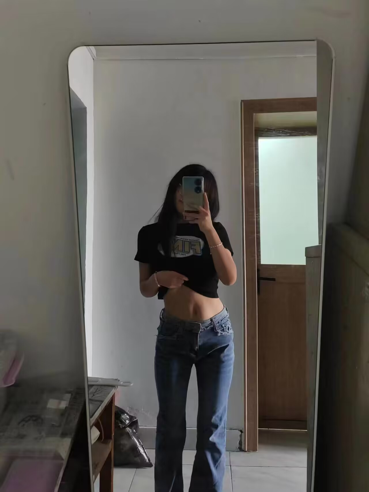
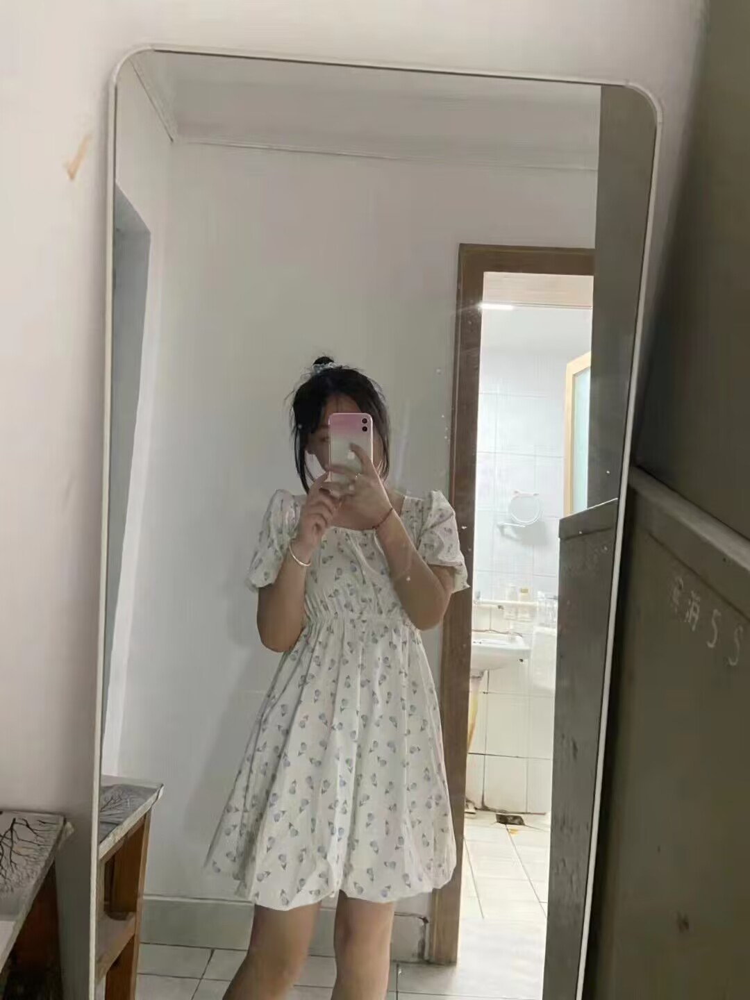

写给李凡姐姐的一些话
“我这一生都是坚定不移的唯物主义者，唯有你，我希望有来生”--周恩来
其实，每次道别之后，我都有悄悄回头
“我想从你的窗子里看月亮”--张爱玲《倾城之恋》
“为什么是我？”“答案很长，我准备用一生的时间来回答，你准备好要听了吗？”--林徽因
世界很大，难得遇见你
“不要问我的眼里有没有你，我的余光中都是你”--余光中
“你最可爱，我说时来不及思索，而思索之后，还是这样说”--普希金
你要及时告诉我你对我的不满，你不能偷偷地在心里给我扣分
“第一次见你的时候，我的心里已经炸成了烟花，需要一生来打扫灰炉”--钱钟书《围城》

“月色雪色之间，你是第三种绝色”--余光中
不懂心动，只是看到了你好看的眉眼，就好像看过了万水千山
“你来，无论多大的风雨，我都要去接你”--梁实秋

“太阳落山的时候，你的眼睛充满了光明，像你的名字，像辉煌的天穹，我将默默注视你，让一生都沐浴着光辉”--顾城
一旦遇见，便是一眼千年
“时光如水，总是无言，若你安好，便是晴天”--徐志摩

“你要是愿意，我将永远爱你，你要是不愿意，我将永远相思”--王小波
如果你半夜醒了，就给我打电话，不要自己玩手机
“海底月是天上月，眼前人是心上人，向来心是看客心，奈何人是剧中人”--张爱玲
点击查看岱岳区实时天气
如果你有什么不开心的就点这里写下来，我都会看的